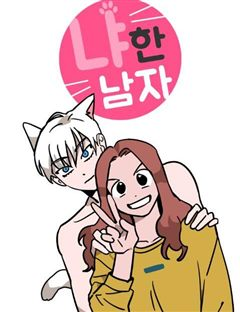

요리·육아·동물 웹툰 추천 TOP 30
음식&요리, 이세계요리, 육아물, 동물, 농사 같은 태그가 붙은 작품을 모았어요. 네이버웹툰·카카오웹툰·레진코믹스에서 조건에 맞는 작품 186개 중 인기 순으로 30개를 골랐어요. 인기 TOP 3: 엄마가 계약결혼 했다, 무림세가 천대받는 손녀 딸이 되었다, 호랑이형님
2026-10-04 기준 · 성인 작품 제외
내 취향으로 더 좁혀서 추천받기 →-
1
 카카오웹툰
카카오웹툰엄마가 계약결혼 했다
리리카는 술주정뱅이 어머니를 모시고 하루하루 먹고 사는 빈민가의 소녀다. 그러던 어느날...... “꺄악, 뜨거워! 싫어!” 어머니가 비명을 지르며 잠에서 깨어나더니, “리리,살아있구나, 어려졌니?” 엉뚱한 소리를 하시고 “오늘이 며칠이지?” 정신을 못 차리시더니 “이럴수가, 돌아왔어…
육아물힐링로판카카오웹툰에서 보기 → -
2
 카카오웹툰
카카오웹툰무림세가 천대받는 손녀 딸이 되었다
무협지 속 세상으로 빙의한 주인공. 남주인공을 영웅의 길로 이끄는 참스승이자 완전체, 백리의강의 어리석은 민폐딸 백리연으로 빙의한다. 뜻밖의 죽임을 당하고, 눈을 떠보니 모든 것을 되돌릴 수 있는 아이 때로 회귀하는데. "나, 이번엔 사랑받을 수 있는 거야?" 이번 생에서는 민페딸이…
육아물사이다로판카카오웹툰에서 보기 → -
3
 네이버웹툰
네이버웹툰호랑이형님
신비한 힘을 가진 아이를 이용하여 세상을 지배하려는 반인반수 흰눈썹! 그리고 얼떨결에 아이의 보호자가 된 괴물호랑이 빠르와 착호갑사 지망생 가우리! 이제 힘을 합쳐 흰눈썹으로부터 아이와 세상을 지켜라!!!
동물명작세계관동양풍판타지판무네이버웹툰에서 보기 → -
4
 카카오웹툰
카카오웹툰오무라이스 잼잼
'음식'과 '가족'의 이야기를 담은 에세이 만화. 몇 개라도 먹을 수 있을 것 같은 '메추리알 조림', 빙글빙글 돌아가는 '회전초밥', 지구 반 바퀴 돌아 포르투갈에서 맛본 '에그타르트', 매콤상콤하게 볶아 입맛 도는 '마라샹궈', 짭짤한 밥도둑 '간장게장' 등 우리가 사랑하는 모든…
음식&요리공감카카오웹툰에서 보기 → -
5
 네이버웹툰
네이버웹툰일렉시드
<노블레스> 손제호 작가와 <소녀더와일즈> 제나 작가가 만났다! 고양이 몸에 깃든 각성자 카이든과 각성능력을 숨겨온 고등학생 지우 러블리 2인조의 액션 판타지
동물이능력배틀아카데미물세계관네이버웹툰에서 보기 → -
6
 카카오웹툰
카카오웹툰악당들에게 키워지는 중입니다
즐겨보던 로판 소설의 엑스트라 소녀로 빙의한 지 1년 만에 내가 곧 쫓겨날 신세라는 걸 알게 됐다. 차라리 내 발로 집을 나가겠다고 했더니, “사실은 이 아이가 내 따님입니다. 그렇지, 따님?” 사이코패스 망나니 공자의 눈에 들어 버렸다? ‘놀이 후에 상대한테 준 돈이 섬 하나를 살…
육아물미스터리로판카카오웹툰에서 보기 → -
7
 네이버웹툰
네이버웹툰정글쥬스
의문의 벌레약 ‘정글쥬스’로 인해 곤충인간이 되었다. 이를 숨기며 살던 대학생 장수찬은 어느 날 그 모습을 모두에게 보이게 되고, 곤충인간들의 사회로 들어가 약육강식의 논리와 맞서 싸우게 되는데... 각양각색 곤충능력자들의 판타지 액션 슈퍼스트링 유니버스의 새로운 히어로 등장!
동물현대판타지열혈캠퍼스현대네이버웹툰에서 보기 → -
8
 카카오웹툰
카카오웹툰가짜를 위한 장소는 없다
어미와 공모하여 황녀를 사칭하고, 마탑과 제국을 이간질하여 전쟁을 일으킨 '가짜 황녀', 필로멜. 그녀는 모든 죄가 들통나자 사형 당한다. 실로 악당에 어울리는...... "내가, 아니 책 속의 필로멜이 잘못을 했기로서니 죽일 만큼은 아니잖아!" 필로멜은 괴성을 지르며 읽던 책을 던졌…
육아물눈물샘자극로판카카오웹툰에서 보기 → -
9
 네이버웹툰
네이버웹툰백수세끼
백수 시절 내 곁을 지켜줬던 그녀... 돌아와 주면 안 되겠니? 음식 메뉴마다 담겨 있는 우리들의 연애 흑역사!
음식&요리리얼로맨스공감캠퍼스오피스네이버웹툰에서 보기 → -
10
 카카오웹툰
카카오웹툰시한부를 즐겼을 뿐이었는데
시한부였던 나, 빙의도 시한부 캐릭터에 해버렸다? 비록 이번에도 시한부지만 오늘내일하던 내게 21년의 삶이 생겼다. 이렇게 움직였는데 폐도, 심장도 아프지 않아. 숨이 차지만, 이것조차 너무 즐거워! 건강하게만 자라달라는 엄마와 처음 느껴보는 가족들의 사랑. 이번 생은 내게 선물이다.
육아물눈물샘자극로판카카오웹툰에서 보기 → -
11
 카카오웹툰
카카오웹툰흑막 범고래 아기님
“안녕 아저씨!” 어느 날 내 앞에 웬 범고래 꼬맹이가 나타났다. “교육기관이라는 거 어디 있는지 알아? 나 가야 해. 거기.” “길, 한참은 잘못 들었는데.” 아무래도 이건 내 딸인 것 같은데. “뭘 봐 아저씨? 한 입 줘?” 내가 아비인 줄 모르는 것 같다. * * * ……라고 생…
육아물로판카카오웹툰에서 보기 → -
12
 카카오웹툰
카카오웹툰저승식당
“8, 8, 8, 82억이요?!” 흙수저 인생에 갑자기 찾아온 82억의 건물!! 그리고… 식당? 식당에 찾아오는 손님들의 행색은 수상하기 짝이 없고 알 수 없는 말만 하는데……. 서울 한복판에서 벌어지는 등골 서늘한 감동 스토리. 매일 밤 열한 시부터 한 시까지. 저승식당, 지금 영업…
음식&요리힐링옴니버스카카오웹툰에서 보기 → -
13
 카카오웹툰
카카오웹툰아기님 캐시로 로판 달린다
집도, 절도, 부모도 없이 살다가 고생만 하며 죽었는데 천사가 나타나 제안했다. “로맨스판타지 소설의 프로베댓러인 당신, 로판을 참고해 만든 세계에 환생하지 않겠습니까?” (잘생긴) 아빠에, (잘생긴) 오빠들이 다이아 수저로 맘마를 떠먹여 준대서 환생했더니…. —엄마가 바람피워서 낳은…
육아물로판카카오웹툰에서 보기 → -
14
 카카오웹툰
카카오웹툰사생아 공주로 살아남기
"어리다고 무시하지 마! 나, 이래 봬도 인생 10회차야!” 나는 적국의 핏줄로 오해받아 아홉 번의 죽음과 회귀를 겪은 비운의 사생아 공주다. 그런데 뭐? 내 친부가 마왕을 물리친 전쟁 영웅이자 대륙 최강의 성기사 파에온이었다고?! 그는 공주님과 금단의 사랑으로 날 낳고는 방치했다.…
육아물로판카카오웹툰에서 보기 → -
15
 네이버웹툰
네이버웹툰나 혼자 탑에서 농사
어느 날 갑자기 도시에 나타난 정체불명의 탑. 사람들은 그곳을 던전이라고 부르기로 했다. 그리고 그곳은 험한 지형과 위험한 몬스터들로 가득했지만 수많은 보물이 기다리는 기회의 땅이기도 하다. 평범한 삶을 살고 있던 청년 세준은 우연한 기회로 던전에 초대받게 되고 자신도 부자가 될 생각…
음식&요리동물농사가족판타지네이버웹툰에서 보기 → -
16
 카카오웹툰
카카오웹툰던전 안의 살림꾼
얼굴 맛집의 귀환! 거기에 귀여움까지 더했다?! 대한민국의 평범한 직장인 이희나. 25세. 오늘도 평범하게 야근 삼매경... 인 줄 알았는데. 갑자기 각성했다. 그리고 갑자기 던전에 떨어졌다. "하느님부처님알라신님! 제발 헌터, 전투계로 각성하게 해주세요! 이왕이면 쎈 걸로!!" 간절…
육아물로판카카오웹툰에서 보기 → -
17
 카카오웹툰
카카오웹툰쪽쪽이를 주세요
"멜라인, 너만큼은 반드시 죽일 거야!" 마법왕국 실로피아의 위대한 대마법사 헬라. 가족처럼 여겼던 제자 멜라인에게 배신 당해 소멸 마법으로 그 존재가 남김없이 사라지는데… '………애?' 갓난아이로 빙의해버린다. 그것도 라이벌이던 헤이런 제국 클라운 공작가의 환영 받지 못한 사생아로!…
육아물로판카카오웹툰에서 보기 → -
18

네이버웹툰냐한남자
냥줍을 잘못하면...남자친구가 생깁니다(?) 그들의 기묘한 동거가 시작되는 순간, 오늘부터 당신도 '춘배'의 매력에 헤어나올 수 없습니다.
동물4컷만화네이버웹툰에서 보기 → -
19
 카카오웹툰
카카오웹툰다크 히어로의 딸이 되는 법
사람이 마구 죽어 나가는 추리 소설 속 엑스트라가 되었다. 그것도 생존율 최저의, 꿈도 미래도 없는 거지소녀로! ""범인은 바로 저 사람입니다!"" 눈 앞에서 사람이 죽어 나가는 걸 볼 수 없어서 몇 번 슬쩍 범인을 일러줬더니- ""내 딸이 되도록."" 범죄자를 때려잡는 이 소설의 주…
육아물로판카카오웹툰에서 보기 → -
20
 카카오웹툰
카카오웹툰막내 공녀의 총애를 독차지했더니, 모두 내게 집착한다
정보 길드의 일급 요원으로 임무를 수행하던 중 검에 가슴이 꿰뚫렸다. 영락없이 죽었다고 생각했는데……. 8살, 지옥 같던 보육원 시절로 돌아왔다?! “안농, 난 다나야!” 마침, 내 앞에 나타난 엘라드 공작가의 막내 공녀 다이애나. 지난 생의 후회를 반복하지 않기 위해 다이애나를 보살…
육아물성장물미스터리로판카카오웹툰에서 보기 → -
21
 카카오웹툰
카카오웹툰총애를 거절하는데 왜 집착하나요
"넌 내 아이가 아니야. 슈엘리나는 정령 거울형에 처한다.” 진짜 황녀 슈엘리나는 황비의 계략으로 고아원에 버러져 평생을 외로이 살아간다. 마침내 친부인 황제를 만났지만 끝내 비참한 최후를 맞이하게 되고... ‘슈엘리나. 난 너처럼 살지 않겠어.’ 이 상황에서 벗어나기 위해 바일롯 대…
육아물힐링눈물샘자극로판카카오웹툰에서 보기 → -
22
 네이버웹툰
네이버웹툰어느 마법사의 식당
요리사를 꿈꾸던 내가 사고로 이세계에 떨어졌다. 몬스터와 마법이 넘쳐나는 판타지 세계이지만 여기라고 식당을 못할 건 없잖아? 그러나 전쟁으로 인해 이세계에 들어오자마자 군대에 끌려가게 되고, 15년간의 고생 끝에 드디어 나만의 식당을 열게 되는데...
음식&요리마법요즘핫한추천작힐링차원이동네이버웹툰에서 보기 → -
23
 네이버웹툰
네이버웹툰사람의 탈
탈은 예술, 춤은 무술! 천대받는 탈춤광대 ‘봉산’은 스승이 남긴 지도를 따라 왕이 되려는 괴물 호랑이 ‘사풍흑호’를 막기 위해 전설 속의 '사람의 탈'을 찾아 모험을 떠나게 되는데 …
동물동양소년물모험크리처네이버웹툰에서 보기 → -
24
 카카오웹툰
카카오웹툰형아, 나 귀엽지?
[20살 차이 형제의 힐링 감성 육아기] 갑작스러운 교통사고로 부모님을 잃게 된 시혁과 20살 차이가 나는 남동생 시하. “아아.” 이 말밖에 하지 못하는 동생. 이런 동생과 자신을 둘러싸고 가족들이 장례식장에서 수군거렸다. “둘이 어떻게 해요? 누가 맡으려고 해요?” “어유. 이제…
육아물힐링카카오웹툰에서 보기 → -
25
 네이버웹툰
네이버웹툰풍작이에요, 마왕님!
게임 속 최종보스 마왕이 되었다. 그런데... 이대로 인간계를 침공하면? 내가 키운 만렙 주인공에게 사망. 그렇다고 침공을 중단하면? 굶주린 수하 마족 사천왕에게 사망. ...그러므로, 답은 농사다.
농사판타지개그세계관게임판타지이세계네이버웹툰에서 보기 → -
26
 카카오웹툰
카카오웹툰악마의 사랑을 받는 딸이래요
외숙부와 이모에게 학대를 받으며 자란 미아. 어느 날, 꿈 속에서 외숙부와 이모의 계략에 넘어가 이복오빠를 살해하고, 대전쟁을 일으키는 미래를 보게 된다. 이렇게 끝날 수는 없지, 미래는 내 손으로 바꾼다! 그 노력의 첫 번째는 꿈 속에서 만난 친부를 찾아가는 것! “양유삐 주세요!”…
육아물로판카카오웹툰에서 보기 → -
27
 네이버웹툰
네이버웹툰파브르 in 사천당가
독물과 독충을 다루던 백만 스트리머 매운 파브르. 아프리카 현지촬영중 블랙맘바에 물려 무림에 전생하게 된다. 정글에서 자신이 좋아하는 독물들을 키우며 자연인 생활을 하던 주인공은 독공을 사용하는 사천당가의 눈에 띄게 된다. "자네. 우리 식구(食口)가 되게!"
동물동양액션판타지판무네이버웹툰에서 보기 → -
28
 카카오웹툰
카카오웹툰피폐 역하렘 남주들의 막내 처제가 되었다
꿈도 희망도 없는 피폐 역하렘 소설 속에 환생했는데, 무슨 이유 때문인지 여주가 죽어버렸다. 원작이 파괴되다 못해 사라진 충격도 잠시. 언니들이 남주들과 이어지기 시작했다. 장난기 많은 집착 황제에게는 어른스럽고 다정한 큰 언니가. 무뚝뚝한 세계관 최강자 검사에게는 연애 천재 둘째 언…
육아물힐링로판카카오웹툰에서 보기 → -
29
 네이버웹툰
네이버웹툰이세계 캠핑으로 힐링 라이프
미각을 잃은 스타 셰프 강현은 사람들의 눈을 피해 한적한 시골로 숨는다. 시골 할아버지 집에서 발견한 이세계로 이어진 통로, 기왕 도망 온 김에 이세계에서 유유자적 캠핑 라이프를 즐기려고 하는데… 자꾸만 강현에게 관심을 가지는 이세계 사람들. 과연 강현은 진짜 힐링을 찾을 수 있을 것…
음식&요리이세계요리감성적인일상가벼운네이버웹툰에서 보기 → -
30
 네이버웹툰
네이버웹툰용한소녀
열여덟살이 결혼은 무슨 결혼이야! 정략결혼을 피해 용궁에서 지상으로 도망친 용왕의 딸 김용만은 성공을 목표로 전교 1등의 꿈을 품고 고등학교에 입학한다. 그런데 용만의 옆자리인 전교 1등, 심해수는 라이벌의 등장이 달갑지 않은 듯한데... 공부만 하기에도 바쁜 두 사람이 어째서인지 자…
동물무해한러블리동아리다정남네이버웹툰에서 보기 →